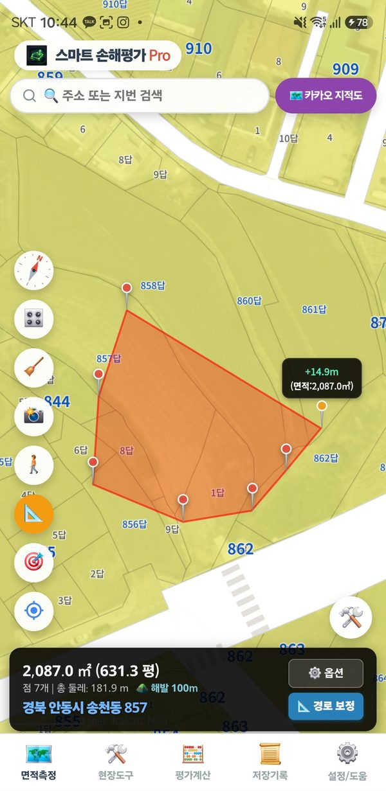

Há duas formas de medir uma lavoura: tocar nos cantos dela no mapa ou percorrer o contorno caminhando com GPS.
Olhe o mapa de satélite e toque nos cantos do terreno, um após o outro. Dá para medir sem ir ao local.
-23.5505, -46.6333. Se estiver no local, toque em «Minha localização».
Caminhe pela borda do terreno e o app desenha a área seguindo seu trajeto GPS. Use quando o limite não aparece no mapa de satélite ou quando precisa da área realmente cultivada.
Em trator ou veículo, use «🚗 Rastr. veículo» no menu de ferramentas da direita. Pro
A barra de status escura embaixo mostra o resultado em tempo real.
| Aparece | Significado |
|---|---|
| 2.086,7 m² (0,2087 ha) | Área das áreas desenhadas. Com várias, é o total; as áreas excluídas são descontadas. |
| sobrep. −100,6 m² / excl. −25,1 m² | Se as áreas se sobrepõem, a parte sobreposta é contada uma só vez; «excl.» é a área das partes excluídas. As duas já estão descontadas do total. |
| Pontos 9 | Perímetro 92,3 m | Número de pontos e comprimento do perímetro. |
| ±6 m Regular | Raio de erro do GPS: ±5 m ou melhor é bom (verde), 5–8 m regular (amarelo), 8–12 m fraco (laranja). |
| Endereço | Endereço do primeiro ponto. |
«⚙️ Opções» na barra de status permite digitar uma área de referência para ver a diferença em %, ou medir o ângulo de um terreno inclinado para obter a área horizontal. A área corrigida pela declividade é só uma referência.
| Botão | O que faz |
|---|---|
| 🧭 Bússola | Mostra para onde o celular aponta. O mapa fica sempre com o norte para cima. |
| 🎛️ Exibição | Mostra ou oculta os textos dos botões, as etiquetas de área no mapa, a seta da sua localização e a bússola. |
| 🧹 Reiniciar | Apaga todas as áreas e linhas do mapa. |
| 📸 Capturar | Salva o mapa (sem botões) como imagem. |
| 🚶 Rastr. a pé | Começa ou termina a medição caminhando. |
| 📐 Área / 📏 Comprimento | Alterna entre medir área e medir comprimento. No modo comprimento aparecem cada trecho e o comprimento total. |
| Minha localização | Leva o mapa até onde você está. |
Toque em «?» no canto superior direito da tela para abrir este guia (a página de edição de pontos se você estiver editando pontos).
Toque em «🛠️» no canto inferior direito para abrir.
| Botão | O que faz |
|---|---|
| ✏️ Continuar | Continua adicionando pontos à área atual. É o modo padrão. |
| ➕ Somar área | Começa outra área em outro lugar. As áreas são somadas. |
| ➖ Excluir área | Desenha uma parte a descontar dentro de uma área (açude, construção, túmulo). Essa área sai do total. |
| ✂️ Edição de pontos Pro | Move ou apaga pontos, ou toque em uma linha da borda para adicionar um. |
| 🗑️ Apagar área Pro | Apaga só uma entre várias áreas. |
| ✨ Desenhar lote Pro só na Coreia | Toque nos lotes para desenhar os limites cadastrais. |
| 🚗 Rastr. veículo Pro | Grava o trajeto em velocidade de veículo. |
| ↺ Desfazer / ↻ Refazer | Volta ou avança um passo. |
| 📌 Histórico de medições Pro | Salva as coordenadas desenhadas com um nome para abri-las depois. |
A área do app pode diferir do registro do imóvel em cerca de 0,5–1%. Os registros usam uma projeção plana, enquanto os apps de mapa calculam sobre a Terra redonda, e as imagens de satélite podem estar deslocadas alguns metros. Isso acontece em todos os apps de mapa.